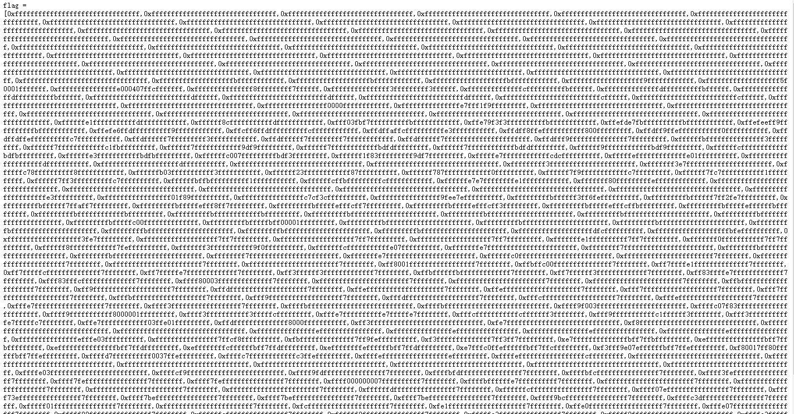
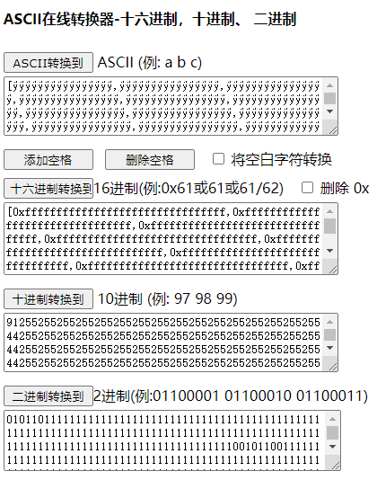
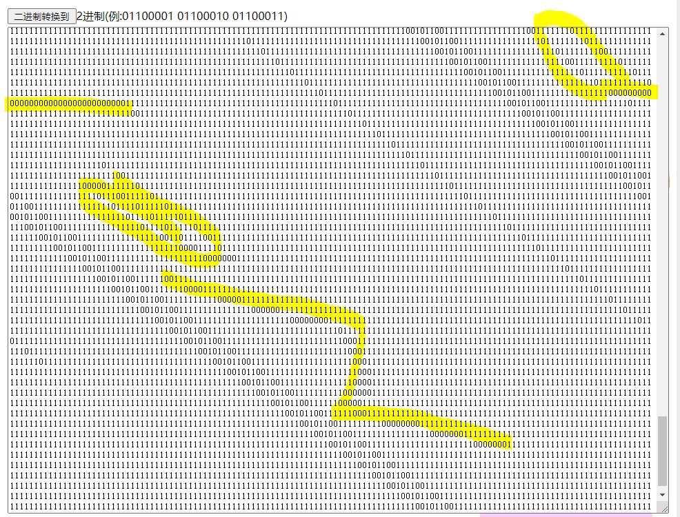
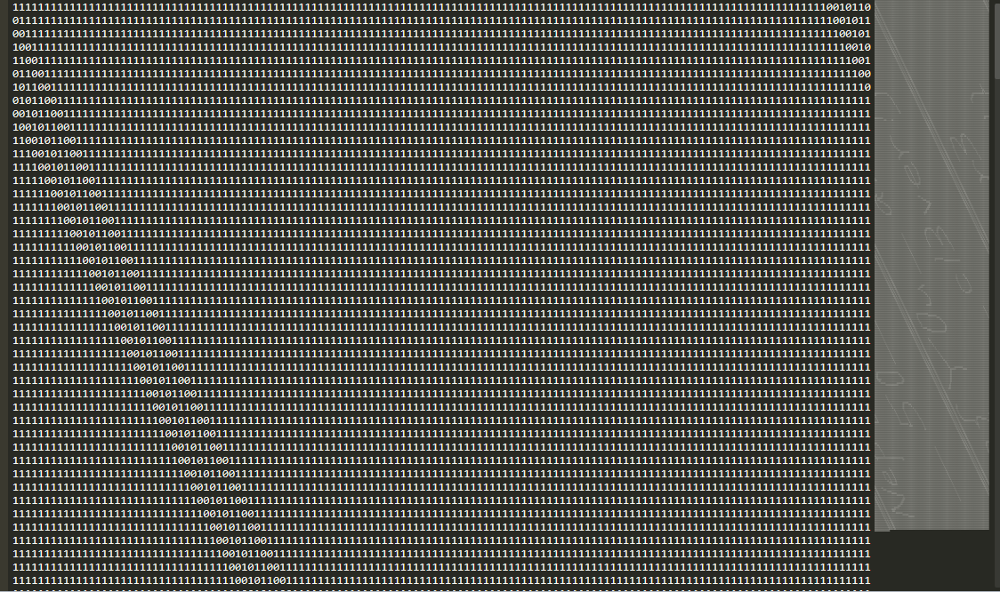
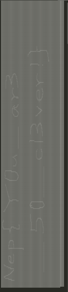
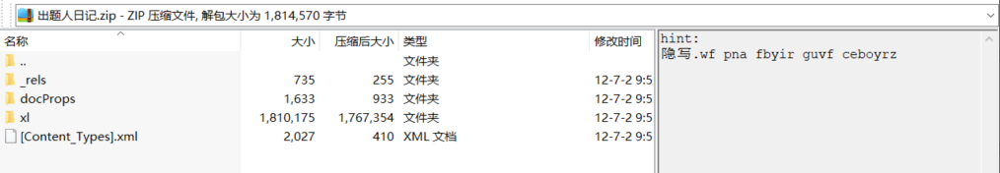
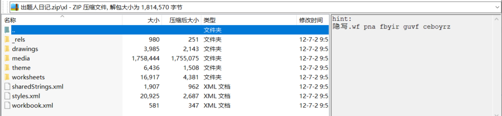
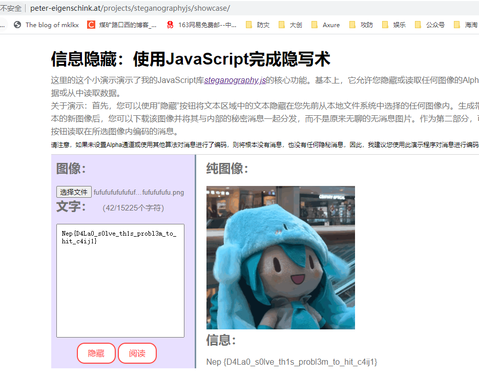
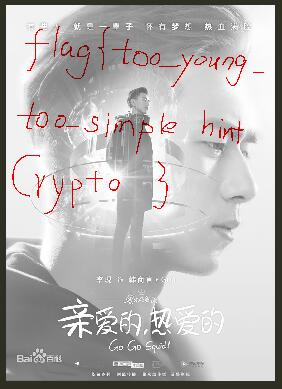

Nep2021
1
[涅普冬令营]MISC签到
sharun：这题有很多解啊
本次涅普MISC的感受是，考点不难，只要找到点和合适的工具就能出。恍然大悟
签到题是这样的
flag =[0xffffffffffffffffffffffffffffffff,0xffffffffffffffffffffffffffffffff,0xffffffffffffffffffffffffffffffff,0xffffffffffffffffffffffffffffffff,0xffffffffffffffffffffffffffffffff,0xffffffffffffffffffffffffffffffff,0xffffffffffffffffffffffffffffffff,0xffffffffffffffffffffffffffffffff,0xffffffffffffffffffffffffffffffff,0xffffffffffffffffffffffffffffffff,0xffffffffffffffffffffffffffffffff,0xffffffffffffffffffffffffffffffff,0xffffffffffffffffffffffffffffffff,0xffffffffffffffffffffffffffffffff,0xffffffffffffffffffffffffffffffff,0xffffffffffffffffffffffffffffffff,0xffffffffffffffffffffffffffffffff,0xffffffffffffffffffffffffffffffff,0xffffffffffffffffffffffffffffffff,0xffffffffffffffffffffffffffffffff,0xffffffffffffffffffffffffffffffff,0xffffffffffffffffffffffffffffffff,0xffffffffffffffffffffffffffffffff,0xffffffffffffffffffffffffffffffff,0xffffffffffffffffffffffffffffffff,0xffffffffffffffffffffffffffffffff,0xffffffffffffffffffffffffffffffff,0xffffffffffffffffffffffffffffffff,0xffffffffffffffffffffff |
第一次尝试可能是异或，想了想后发现如上所示，大部分是0xf，是相同的字符，奇怪
第二次尝试直接转十六进制，全是不可见字符，失败
第三次觉得可能是纯几何的图案题：

但是总觉得差一口气
第四次尝试回到了第二次的思路，进制转换看看。

看不出来名堂，便开始玩了。

有意思嘿。隐隐约约能看到NEP字样。
把内容移到sublime
因为它的文字内容能够根据应用边距的变化而变化。
不断调整

看到希望了！

Nep{Y0u_ar3_50_cl3ver!} |
解出来之后想起一道相似的入门题。
2
[涅普冬令营]出题人日记
我把茶包的出题日记找到了，里面居然有！！！
得到出题人日记.zip
解压得xlsx
根据经验更改后缀为.zip
winrar打开看到
隐写.wf pna fbyir guvf ceboyrz |
怀疑栅栏

打开/xl

在shareStrings.xml里看到日记内容
重点在于：
-<si> |
依次处理
上述文本rot13后：
隐写.js can solve this problem |
在/media里得到几张图片
fufufufufufufufufuufufufufufufufufufufufufufufufufu.flag查看二进制后，更改后缀为.png
得到与image3.gif第一帧相同的图片，猜想盲水印。对比无果。
卡了很久。
尝试js隐写，查询【png隐写js】类似关键字无果。
突然想到，隐写=steganography，隐写.js=steganography.js
查询搜索引擎得
http://www.peter-eigenschink.at/projects/steganographyjs/showcase/
秒出

Nep {D4La0_s0lve_th1s_probl3m_to_hit_c4ij1} |
3
make_hsy_great_again
Q师傅是韩商言的粉丝，前段日子他刚组装了台新电脑，并且要求我帮他装系统，我在他电脑里发现了这个。
得到加密的make hsy great again_.rar
rar5用hashcat
第一步：
#rar2john hsy.rar |
第二步：
hashcat --force -m 13000 -a 3 '$rar5$16$fe5656ec27f0754cb92ca0a79120e099$15$974a98d46f1d4da877c271091ea930e9$8$48f568d6888772c2' ?d?d?d?d?d?d |
开始爆破
$rar5$16$fe5656ec27f0754cb92ca0a79120e099$15$974a98d46f1d4da877c271091ea930e9$8$48f568d6888772c2:520233 |
密码【520233】，得到【hhhhhhsy.png】
通过010editor看到格式

结合png格式，编写倒置函数：
with open('Untitled1','rb') as f: |
得到另一张图片【flag.png】，表面看跟已知图片一样，丢进Beyond Compare 4
对比两张图片，得到

根据提示【flag{too_young_too_simple hint Crypto}】
找到hint Crypto脚本：
from PIL import Image |
得到
Nep{Qfrost_l0v3_hsy_v3r7_m0ch} |